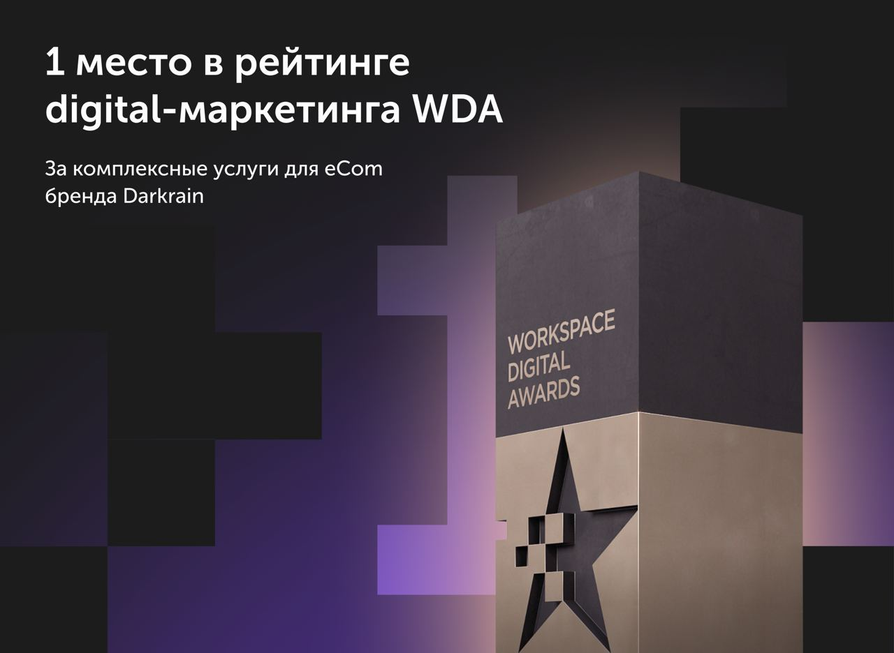

Недавно мы стали победителями премии Workspace Digital Awards с кейсом Darkrain. И это отлично иллюстрирует то, о чем я говорил в прошлых постах — навык выстраивать долгосрочное сотрудничество становится важнейшим фактором для эффективной работы и крутых результатов.
Горжусь командой проекта, которая на протяжении 6 лет помогает клиенту в продвижении бизнеса и достигает высоких показателей.
Сергей Прусс
